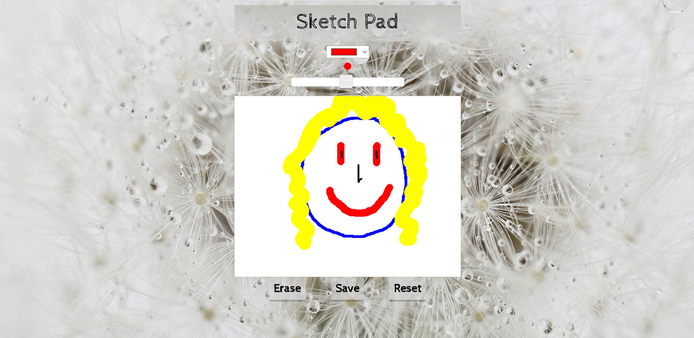

Let your creativity flourish

Highly professional drawing app made with HTML, CSS, jQuery, jQueryUI, HTML5 Canvas and Local Storage. Users can draw on the app by holding the mouse key and moving the mouse inside the canvas. A colour input enables users to pick any colour. A slider input controls the width of the line. There are a few buttons, including an 'Erase' button, which toggles between drawing mode and erase mode. A 'Save' button saves work in local storage so that if the app is loaded again the user starts exactly where last finished. Finally, a 'Reset' button resets to a blank canvas.
Once app is loaded, if user has never used on the device or if never saved any work, a blank canvas will load. If work from the past has been saved, then the canvas from local storage will load. If clicked inside the container, the user will be in painting or erasing mode, and once the mouse moves while holding the mouse key, the user will be either painting or erasing. If painting, a line will draw using the color and width inputs.
To erase, click on the 'Erase' button for erase mode to activate and a white line will draw. To toggle back to paint mode, click on the 'Erase' button again. If the 'Save' button is clicked, the canvas will save to local storage and if the app starts again, the user will automatically return to the saved state. If the 'Reset' button is clicked, the canvas resets to empty. To change the canvas strokeStyle, choose a color from the color input. To change the canvas lineWidth, adjust the slider input.